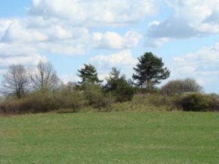
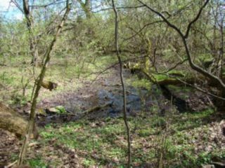

Kopystanka
Kopystanka widziana z Horbyska
Widok z Kopystanki na Pikulec
Widok z Kopystanki na Szybenicę
Widok z Kopystanki na Kalwarię Pacławską i okolice
Widok z Kopystanki na wieś Kopysno
Horbysko

Grodzisko

Potok Grabnik wypływający ze wschodniej części zbocza,
poniżej grodu
Cmentarz dla zmarłych na cholerę
Dwór
Niewielki pagórek, na którym stał dwór

Rozlewisko ze źródełka zasilającego staw
Fragmenty fundamentów, które pozostały po dworze
Najstarsze drzewa rosnące nad stawem
Wiekowy dąb z wypróchniałym i podpalonym pniem,
świadek dawnych czasów
Cerkiew

Kapliczka św. Jana